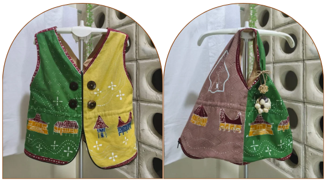

Eling adalah rompi 2-in-1 dari 100% bahan alami — dikenakan sebagai busana etnik, dilipat jadi tas belanja yang menahan beban hingga 1 kg. Satu produk, dua kebiasaan baik.
size l → s · serut pinggang · pre-order terbatas
3 jenis kain alami · motif batik tulis

Foto prototipe asli — motif batik tulis rumah adat
100%
bahan alami
1 kg
kapasitas bawa
3
jenis kain
L→S
ukuran serut
5
motif rumah adat
Eling lahir dari pengamatan sederhana: tekstil sintetis menumpuk, sisa kulit jagung dan batok kelapa terbuang, dan anak muda makin jauh dari cerita di balik motif batik.
Polyester fast fashion sulit terurai dan terus menumpuk di akhir masa pakainya.
Sisa kulit jagung dan batok kelapa dari dapur rumahan terus bertambah, belum banyak dimanfaatkan.
Generasi muda kian jauh dari makna motif batik dan ragam rumah adat Indonesia.
Katun (Gossypium) dan rami (Boehmeria nivea) yang biodegradable, tak meninggalkan limbah tekstil di akhir pakai.
Berubah jadi totebag berkapasitas hingga 1 kg, mengurangi kebiasaan memakai kantong plastik saat belanja.
Keychain kulit jagung menyertakan kartu ucapan berisi filosofi motif rompi yang kamu terima.
Ajukan warna dan elemen motif tambahan, termasuk penamaan pada keychain terkait.
Kenali 3 jenis kain alami, 5 rumah adat dari 5 pulau utama Indonesia, dan cara sisa kain diubah jadi keychain.
Teknik batik tulis untuk motif rompi, dipadukan teknik anyaman sederhana pada kulit jagung untuk keychain.
Serut mengelilingi lingkar pinggang, ukuran L hingga S tanpa mengubah tampilan motif.
Pola dirancang presisi, sisa kain jahit dikumpulkan, lalu dijahit ulang jadi keychain — tak ada yang terbuang.
Eling menerapkan zero waste dan ekonomi sirkular dalam tiga langkah berurutan berikut.
Pola pada ketiga jenis kain dirancang presisi untuk meminimalkan sisa potong sejak awal.
Kain perca hasil menjahit rompi dikumpulkan, begitu pula sisa kulit jagung dan batok kelapa.
Sisa perca dan bahan organik dijahit dan dianyam kembali menjadi keychain — produk turunan tanpa limbah.
kain 01
Kain dasar batik tulis, permukaan halus untuk detail motif.
kain 02
Serat kapas (Gossypium), lentur dan nyaman untuk dikenakan harian.
kain 03
Serat rami (Boehmeria nivea) menambah kekuatan tarik saat rompi jadi totebag.
Serat rami sebagai bahan utama, kain perca dan limbah organik (kulit jagung, batok kelapa) diubah jadi keychain.
Teknik batik tulis tradisional pada desain modern menjaga eksistensi warisan budaya sekaligus menyisipkan pesan edukasi.
Produk multifungsi berbahan baku limbah menekan harga pokok, membuka lapangan kerja bagi pembatik dan pengrajin lokal.
B2C · remaja
Usia 12–25 tahun, menyukai gaya etnik kontemporer dan aktif mengikuti tren fashion.
B2C · dewasa
Usia 26–60 tahun, menyukai gaya etnik yang lebih autentik dan formal, daya beli lebih tinggi.
B2B
Toko fashion di wilayah Jabodetabek yang mencari produk unik berbasis batik.
B2G
Instansi pemerintah atau organisasi untuk kebutuhan souvenir dan pemberdayaan UMKM.